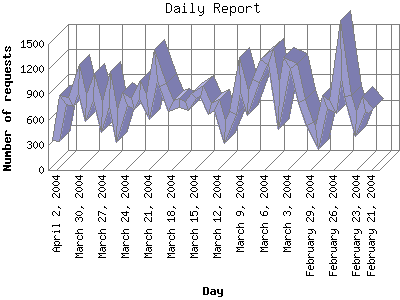

The Daily Report identifies the activity for each day within the reporting period. Remember that one page hit can result in several server requests as the images for each page are loaded.

| Day | Number of requests | Number of page requests | |
|---|---|---|---|
| 1. | February 21, 2004 | 701 | 132 |
| 2. | February 22, 2004 | 791 | 106 |
| 3. | February 23, 2004 | 545 | 97 |
| 4. | February 24, 2004 | 876 | 106 |
| 5. | February 25, 2004 | 1,445 | 160 |
| 6. | February 26, 2004 | 751 | 72 |
| 7. | February 27, 2004 | 812 | 74 |
| 8. | February 28, 2004 | 380 | 52 |
| 9. | February 29, 2004 | 545 | 71 |
| 10. | March 1, 2004 | 821 | 83 |
| 11. | March 2, 2004 | 1,240 | 161 |
| 12. | March 3, 2004 | 1,275 | 147 |
| 13. | March 4, 2004 | 767 | 114 |
| 14. | March 5, 2004 | 1,353 | 153 |
| 15. | March 6, 2004 | 1,282 | 167 |
| 16. | March 7, 2004 | 1,055 | 108 |
| 17. | March 8, 2004 | 795 | 110 |
| 18. | March 9, 2004 | 1,127 | 135 |
| 19. | March 10, 2004 | 678 | 117 |
| 20. | March 11, 2004 | 454 | 67 |
| 21. | March 12, 2004 | 775 | 103 |
| 22. | March 13, 2004 | 728 | 112 |
| 23. | March 14, 2004 | 945 | 121 |
| 24. | March 15, 2004 | 876 | 92 |
| 25. | March 16, 2004 | 766 | 114 |
| 26. | March 17, 2004 | 802 | 118 |
| 27. | March 18, 2004 | 762 | 83 |
| 28. | March 19, 2004 | 1,014 | 108 |
| 29. | March 20, 2004 | 1,252 | 154 |
| 30. | March 21, 2004 | 753 | 72 |
| 31. | March 22, 2004 | 956 | 134 |
| 32. | March 23, 2004 | 787 | 131 |
| 33. | March 24, 2004 | 843 | 119 |
| 34. | March 25, 2004 | 529 | 47 |
| 35. | March 26, 2004 | 970 | 142 |
| 36. | March 27, 2004 | 635 | 104 |
| 37. | March 28, 2004 | 994 | 103 |
| 38. | March 29, 2004 | 741 | 75 |
| 39. | March 30, 2004 | 1,079 | 124 |
| 40. | March 31, 2004 | 807 | 81 |
| 41. | April 1, 2004 | 832 | 102 |
| 42. | April 2, 2004 | 348 | 44 |
Most active day February 7, 2004 : 191 pages sent.
Daily average: 105 pages sent. 423.866 TB bytes served. 834.581395348837 requests handled.
This report was generated on April 3, 2004 00:36.
Report time frame December 11, 2003 00:13 to April 2, 2004 23:56.
| Web statistics report produced by: | |
| analog 5.1 | Report Magic for Analog 2.10 |